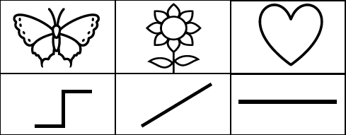
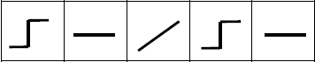
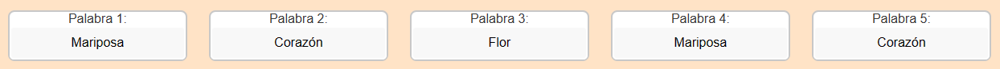

Prueba IV: Memoria-Atención
Instrucción:
Observa atentamente las siguientes secuencias de figuras. Cada figura corresponde a un símbolo que debes escribir en los recuadros de abajo, siguiendo el orden especificado.

Ejemplo:


Siguiente
Aumentar el texto
Disminuir el texto
Reproducir Audio
Reset
Accesibilidad